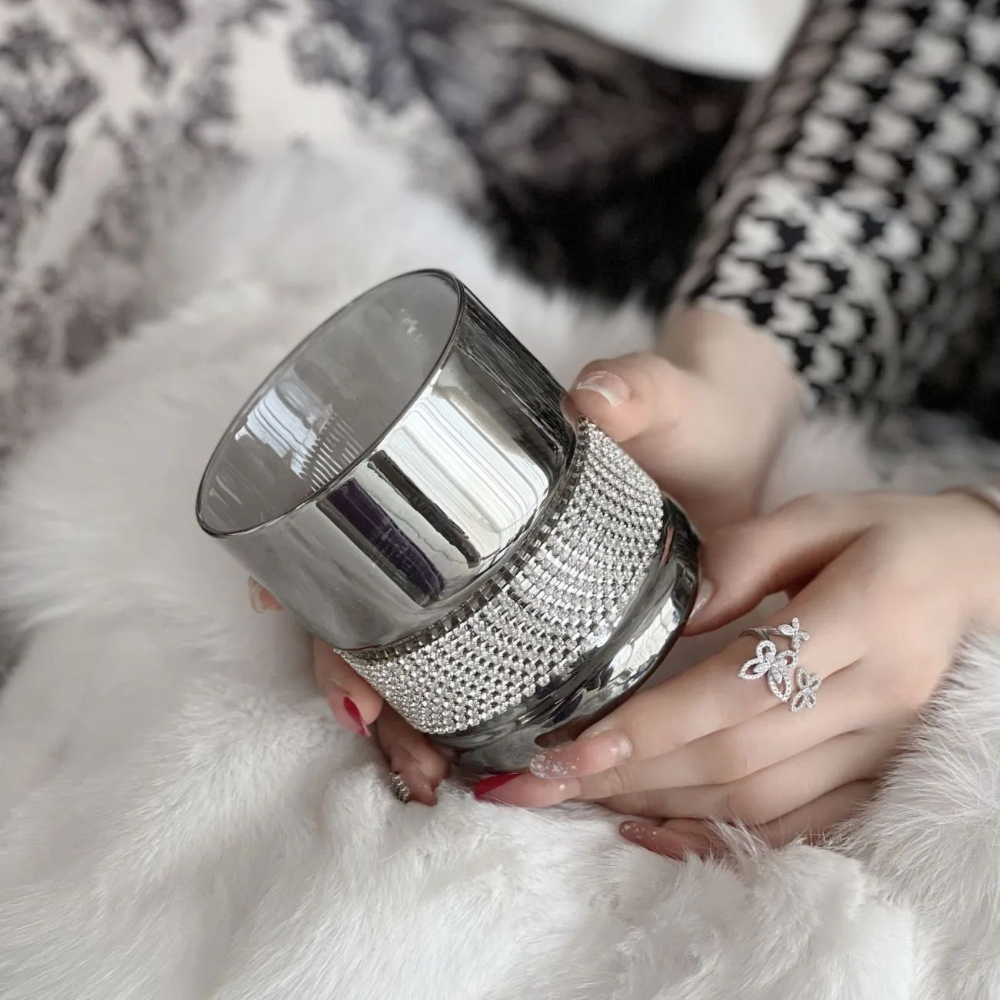
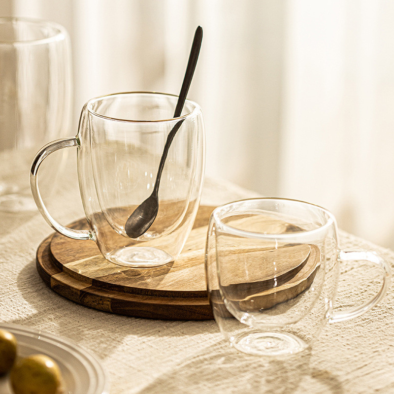
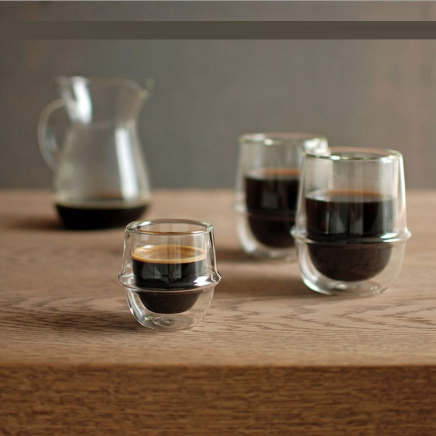
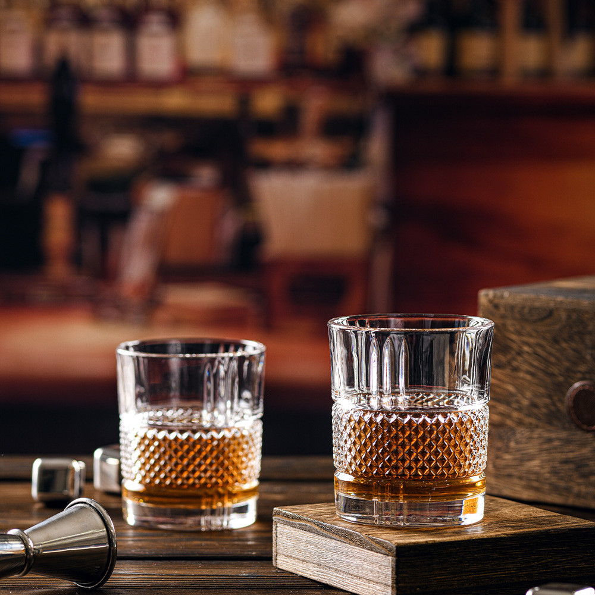
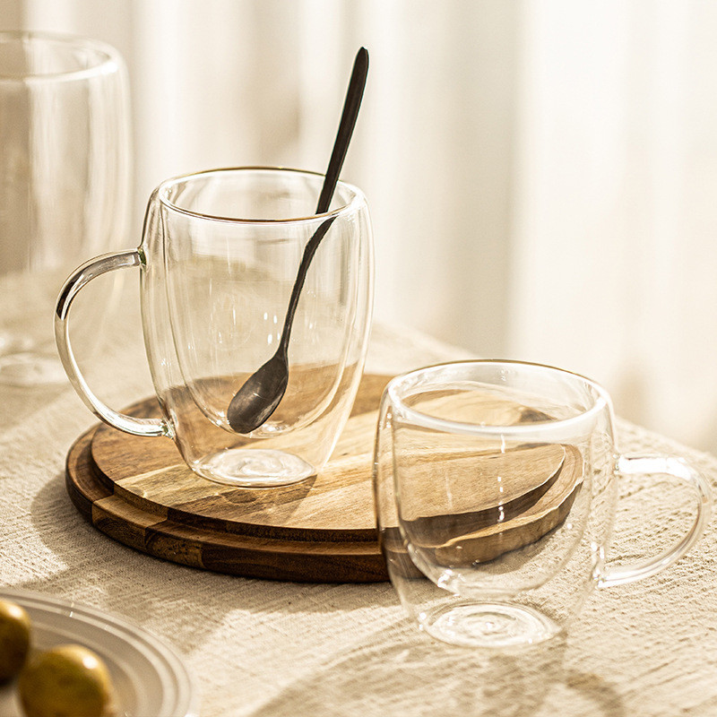
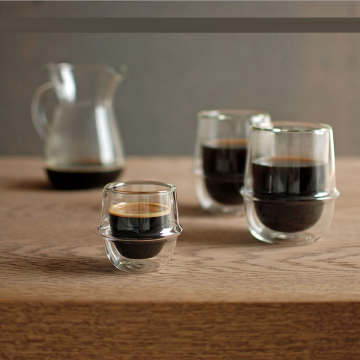
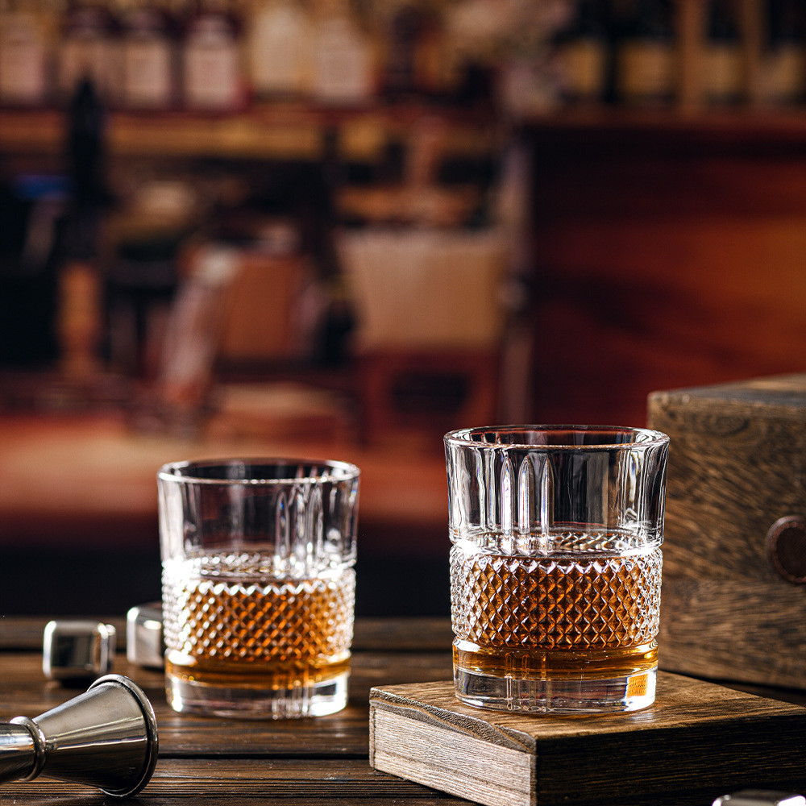
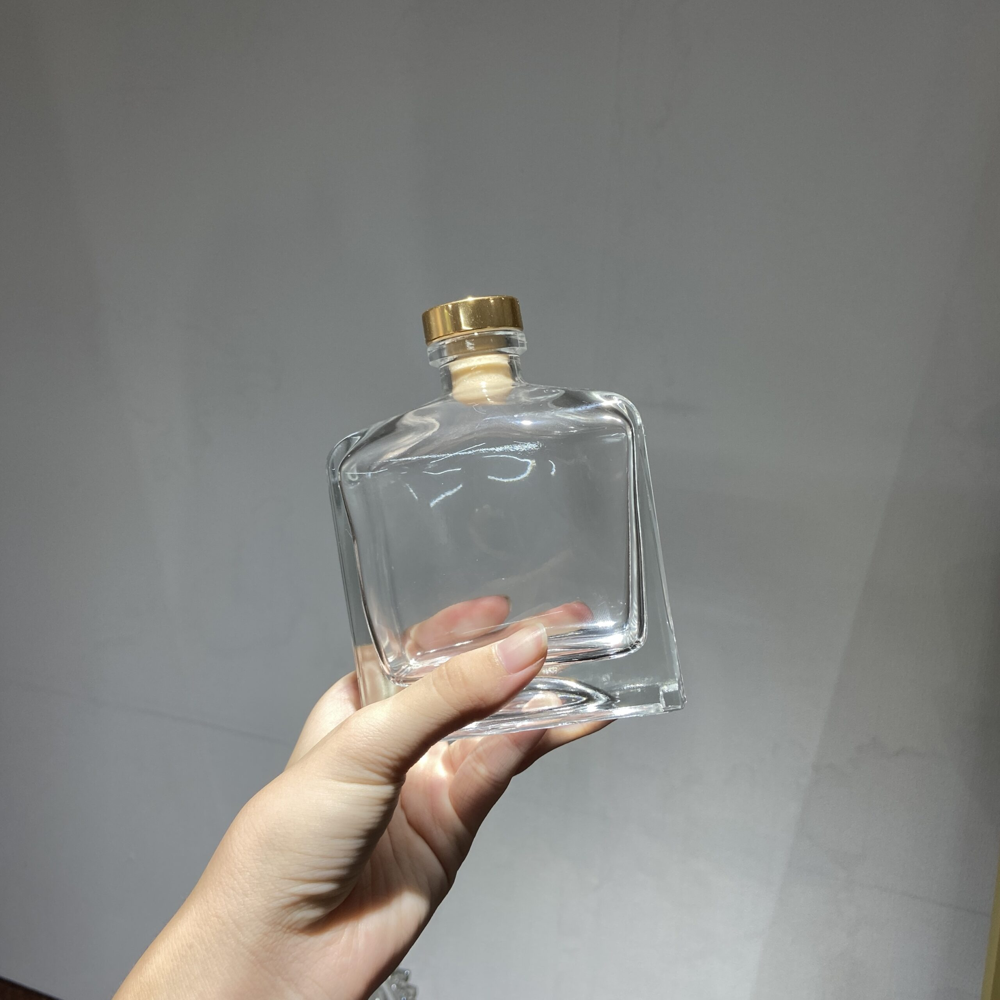

Các loại ly thủy tinh đẹp tại iSOGLASS
Ly thủy tinh đẹp
 Một ly thủy tinh đẹp thường có hình dáng tinh tế, hài hòa, cân đối và đặc biệt
là phải thích hợp với mục đích sử dụng. Ví dụ như ly champagne thường có hình
dáng cao và mảnh khảnh, phù hợp với việc thưởng thức rượu vang sủi bọt, trong
khi ly tumbler thường có hình dáng thấp, đặc biệt phù hợp với việc uống whisky.
Một ly thủy tinh đẹp thường có hình dáng tinh tế, hài hòa, cân đối và đặc biệt
là phải thích hợp với mục đích sử dụng. Ví dụ như ly champagne thường có hình
dáng cao và mảnh khảnh, phù hợp với việc thưởng thức rượu vang sủi bọt, trong
khi ly tumbler thường có hình dáng thấp, đặc biệt phù hợp với việc uống whisky.
Ly thủy tinh cao cấp

iSOGLASS là một trong những địa chỉ uy tín cung cấp ly thủy tinh cao cấp, chất
lượng tại Tp. HCM. Chúng tôi cam kết sản phẩm của mình đều được sản xuất từ
nguyên liệu thủy tinh cao cấp, an toàn cho sức khỏe, đảm bảo độ trong suốt và độ
bền vững trên thời gian sử dụng. Ngoài ra, ly thủy tinh cao cấp còn có khả năng
chịu nhiệt và kháng hóa chất tốt, do đó, nó được sử dụng trong các lĩnh vực như
y học, thí nghiệm, sản xuất thuốc, và các ngành công nghiệp khác.
iSOGLASS cung cấp nhiều loại ly thủy tinh giá rẻ khác nhau, bao gồm:
Ly thủy tinh đơn lớp giá rẻ: đây là loại ly thủy tinh đơn giản nhất, thường được
sử dụng để uống nước, trà, cà phê, nước hoa quả và đồ uống không cồn khác.
 Ly thủy tinh hai lớp giá rẻ: loại ly thủy tinh này có hai lớp kính giữa có
khoảng trống bên trong, giúp giữ nhiệt tốt hơn so với ly đơn lớp, được sử dụng
để uống cà phê, trà, nước hoa quả và đồ uống có cồn.

Ly thủy tinh làm tách cà phê giá rẻ: đây là loại ly được thiết kế đặc biệt để
pha cà phê, với kích thước phù hợp và thiết kế đẹp mắt.

Ly thủy tinh làm tách cà phê giá rẻ: loại ly thủy tinh này có thiết kế đẹp mắt và được thiết kế để uống rượu
vang, giúp tôn lên vị trí và giá trị của loại đồ uống này.

Ngoài ra, iSOGLASS còn cung cấp nhiều loại ly thủy tinh khác nhau với giá cả
phải chăng, đáp ứng nhu cầu sử dụng của khách hàng.
Ly thủy tinh hai lớp giá rẻ: loại ly thủy tinh này có hai lớp kính giữa có
khoảng trống bên trong, giúp giữ nhiệt tốt hơn so với ly đơn lớp, được sử dụng
để uống cà phê, trà, nước hoa quả và đồ uống có cồn.

Ly thủy tinh làm tách cà phê giá rẻ: đây là loại ly được thiết kế đặc biệt để
pha cà phê, với kích thước phù hợp và thiết kế đẹp mắt.

Ly thủy tinh làm tách cà phê giá rẻ: loại ly thủy tinh này có thiết kế đẹp mắt và được thiết kế để uống rượu
vang, giúp tôn lên vị trí và giá trị của loại đồ uống này.

Ngoài ra, iSOGLASS còn cung cấp nhiều loại ly thủy tinh khác nhau với giá cả
phải chăng, đáp ứng nhu cầu sử dụng của khách hàng.
Bảng giá ly thủy tinh mới nhất 2024
Sản phẩm Ly thủy tinh của ISOGLASS có chất lượng cao, tuy nhiên giá cả lại rất
hợp lý và cạnh tranh trên thị trường. Bạn sẽ có được sản phẩm chất lượng với giá
cả hợp lý.
| Loại ly thủy tinh |
Dung tích |
Giá |
|
Ly thủy tinh đơn lớp
|
Liên hệ để tư vấn
|
Liên hệ |
|
Ly thủy tinh 2 lớp
|
Liên hệ để tư vấn
|
Liên hệ |
Tại sao nên mua ly thủy tinh tại iSOGLASS ?

Chất lượng đảm bảo: iSOGLASS chuyên sản xuất và cung cấp các sản phẩm thủy tinh
chất lượng cao với độ trong suốt, độ bền và độ chịu nhiệt tốt. Sản phẩm của
iSOGLASS được sản xuất từ chất liệu thủy tinh cao cấp, an toàn cho sức khỏe và
được kiểm tra chất lượng đảm bảo. Đa dạng mẫu mã: iSOGLASS cung cấp các loại ly
thủy tinh đa dạng về kiểu dáng, kích thước và mục đích sử dụng. Bạn có thể lựa
chọn sản phẩm phù hợp với nhu cầu sử dụng của mình.
 Thiết kế đẹp mắt: Các sản phẩm của iSOGLASS được thiết kế tinh tế, đẹp mắt và
phong cách, có thể làm tăng thẩm mỹ cho không gian của bạn. Giá cả hợp lý là 1
trong những tiêu chí quan trọng mà Khách hàng có thể kiểm chứng được từ chất
lượng ly thủy tinh của chúng tôi. Dịch vụ hỗ trợ tốt: iSOGLASS cam kết cung cấp
dịch vụ hỗ trợ tốt cho Khách hàng, từ tư vấn sản phẩm, đặt hàng, giao hàng và
hậu mãi. Bạn có thể yên tâm về chất lượng sản phẩm và dịch vụ của iSOGLASS.
Thiết kế đẹp mắt: Các sản phẩm của iSOGLASS được thiết kế tinh tế, đẹp mắt và
phong cách, có thể làm tăng thẩm mỹ cho không gian của bạn. Giá cả hợp lý là 1
trong những tiêu chí quan trọng mà Khách hàng có thể kiểm chứng được từ chất
lượng ly thủy tinh của chúng tôi. Dịch vụ hỗ trợ tốt: iSOGLASS cam kết cung cấp
dịch vụ hỗ trợ tốt cho Khách hàng, từ tư vấn sản phẩm, đặt hàng, giao hàng và
hậu mãi. Bạn có thể yên tâm về chất lượng sản phẩm và dịch vụ của iSOGLASS.
Mua ly thủy tinh đẹp ở đâu uy tín và giá tốt nhất tại Tp.HCM?
 iSOGLASS là địa chỉ tin cậy để mua các sản phẩm
ly thủy tinh chất lượng cao, đa dạng mẫu mã, thiết kế đẹp mắt với giá cả hợp lý
và dịch vụ hỗ trợ tốt. Hãy ghé thăm ISOGLASS để tìm kiếm sản phẩm thủy tinh phù
hợp với nhu cầu của bạn nhé.
iSOGLASS là địa chỉ tin cậy để mua các sản phẩm
ly thủy tinh chất lượng cao, đa dạng mẫu mã, thiết kế đẹp mắt với giá cả hợp lý
và dịch vụ hỗ trợ tốt. Hãy ghé thăm ISOGLASS để tìm kiếm sản phẩm thủy tinh phù
hợp với nhu cầu của bạn nhé.
Cơ sở sản xuất ly thủy tinh giá rẻ uy tín tại Tp.HCM
 Ngoài ra iSOGLASS còn cung cấp những mẫu ly thủy tinh giá rẻ cho đồ uống, như ly
thủy tinh chứa nước, ly thủy tinh cổ cao, ly thủy tinh chứa sinh tố, hay ly thủy
tinh để trang trí.
Ngoài ra iSOGLASS còn cung cấp những mẫu ly thủy tinh giá rẻ cho đồ uống, như ly
thủy tinh chứa nước, ly thủy tinh cổ cao, ly thủy tinh chứa sinh tố, hay ly thủy
tinh để trang trí.
Chuyên cung cấp ly thủy tinh cao cấp, chất lượng
 iSOGLASS còn cung cấp những mẫu ly thủy tinh cao cấp chất lượng với độ trong
suốt cùng độ bền cao. Sản phẩm còn được chứng nhận bởi nhiều giải thưởng top 1
trong những hãng sản xuất thủy tinh trong nước. Chúng tôi nhận thiết kế theo mẫu
với những đơn hàng số lượng lớn hoặc những đơn hàng lẻ kể cả những loại ly cao
cấp hay những ly phổ thông để phục vụ quy trình sản xuất kinh doanh của Quý
Khách.
iSOGLASS còn cung cấp những mẫu ly thủy tinh cao cấp chất lượng với độ trong
suốt cùng độ bền cao. Sản phẩm còn được chứng nhận bởi nhiều giải thưởng top 1
trong những hãng sản xuất thủy tinh trong nước. Chúng tôi nhận thiết kế theo mẫu
với những đơn hàng số lượng lớn hoặc những đơn hàng lẻ kể cả những loại ly cao
cấp hay những ly phổ thông để phục vụ quy trình sản xuất kinh doanh của Quý
Khách.